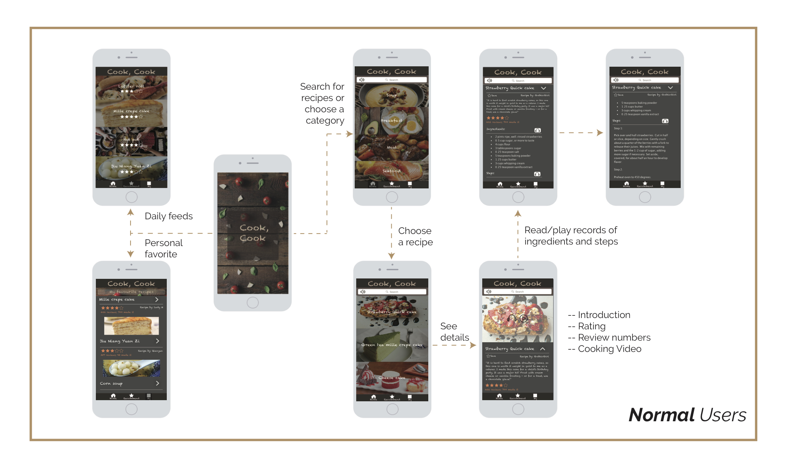

Customized Recipe App
Independent Work, in "Interactive Design Method" class
In this project, I designed an application for common users and blind users respectively to search, read recipes and make food according to instruction. Based on these two target users, their personas are different.
"Keep hands free" has the priority in both designs, so that audio and video are used heavily. Audio is also the most significant interaction method for the blind users. The app would read out recipes (steps and ingredients) automatically when it comes to the page, and it only stops when users leave this page. To give the blind users more convenience, the volume and speed can be adjusted by users by simple slide on the screen. The following figure is the user flow diagram for blind users.

Normal users not only can search and browse recipes, but also can save their favorites and write reviews on recipes. To give clear interactions, I minimized clickable buttons. Videos and audios are accessible for users, and speed is changeable.
